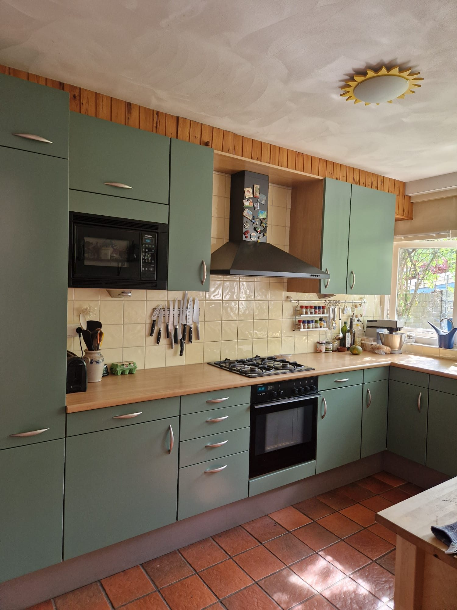
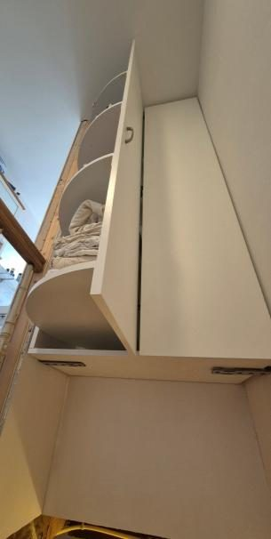
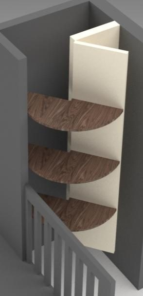
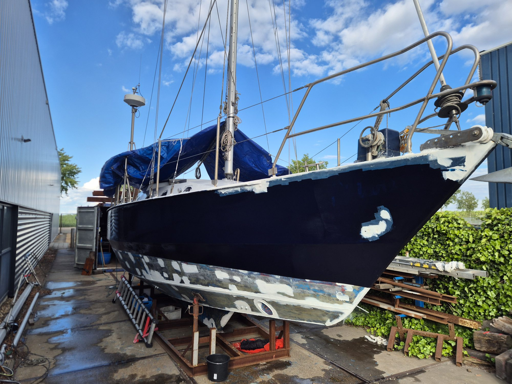

Cabinet
Custom Green Cabinet
Custom-made cabinet for an awkward space, designed to work like a walk-in closet. The U-shape lets you reach every spot while standing in one place.


Company
Practical jobs, custom interior solutions, furniture, repairs, and small build projects. I make clear plans and build them properly.
What I do
BM Klusservice is for work where practical execution and detail both matter: a custom closet, kitchen finishing, repair work, or a small build that needs to fit a specific situation.


Approach
I prefer clear, durable solutions that fit the place they are made for. My product design background helps with planning and detail.

Recent work
Cabinet
Custom-made cabinet for an awkward space, designed to work like a walk-in closet. The U-shape lets you reach every spot while standing in one place.
Exterior
Exterior finishing and renovation of some old woodwork.


Structure
Renovated the garden shed by removing rotten wood, including the full lower section. We lifted the shed so the new structure could be rebuilt with changes that help the wood last longer.


Interior
Small custom table made to fit a record player and an LP collection.


Cabinet
Designed a cabinet above a staircase to make use of empty space, with a revolving section so you do not have to reach over the rail.


Custom fit
Custom-made pine wood plinths made to fit an odd-shaped kitchen.

Roof
Roof renovation to avoid leakage during heavy rainfall in Spain.

Boat
Removed all rust from the inside and outside of an old iron sailboat and made it look like new.

